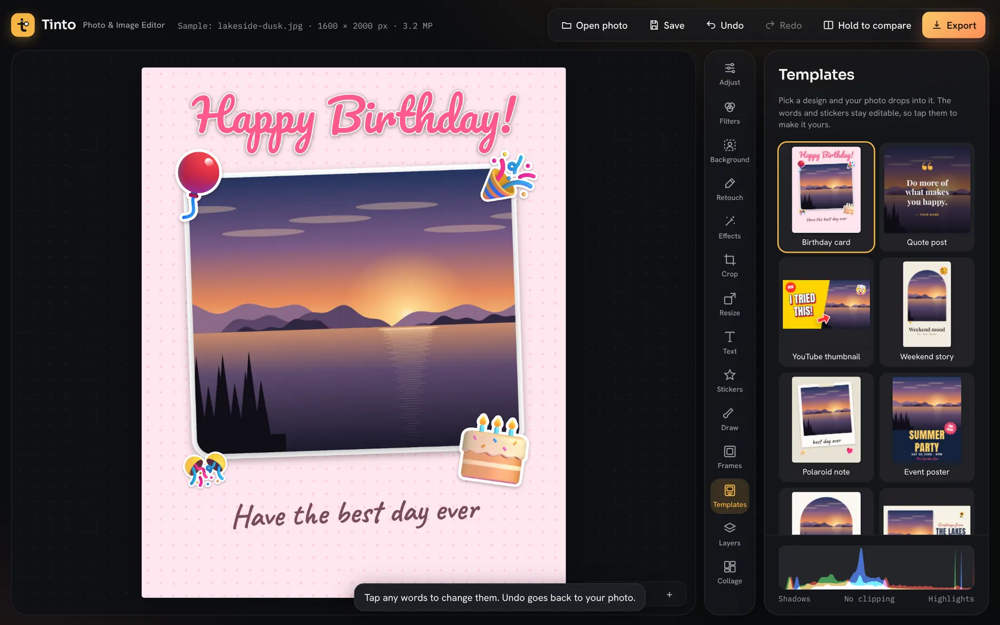
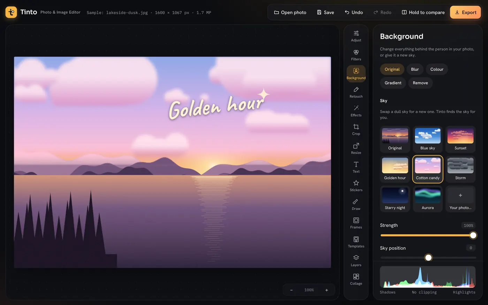
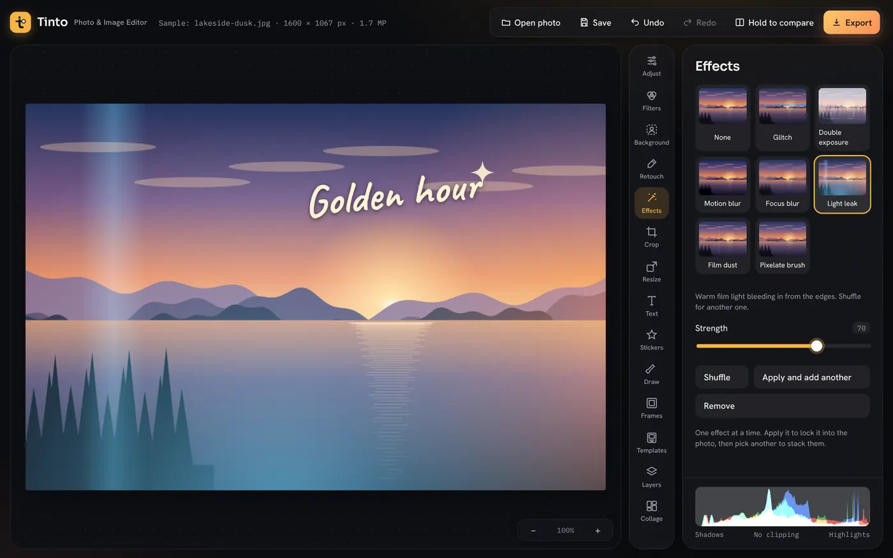
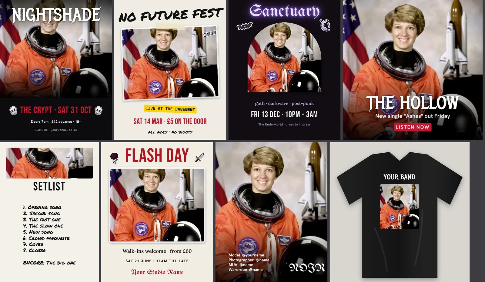
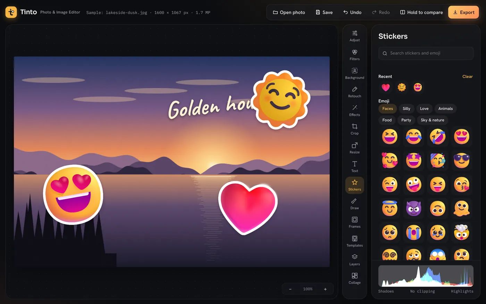
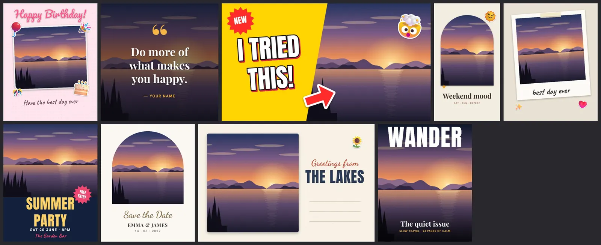
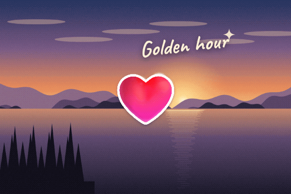
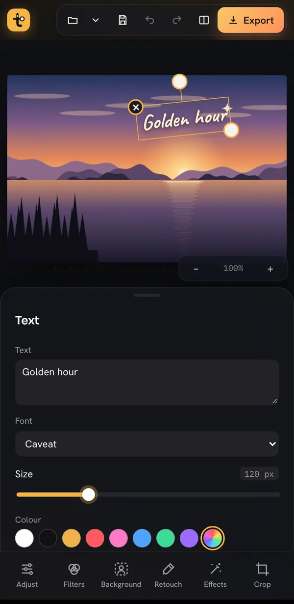

Windows
Tinto-Setup-<version>.exe
- Download the installer and run it.
- If Windows shows a SmartScreen warning, choose More info, then Run anyway.
- Right-click any photo and choose Open with › Tinto.
Tinto is a friendly photo editor with the fun stuff built in. Fix the light, swap the sky, erase what you don't want, then pile on stickers, text and effects. Export a picture, a GIF or a video.

Tinto's AI finds the person and the sky in your photo, and fills in whatever you erase. Your photos never leave your computer or phone.
Paint over a stranger in the background, a bin or a power line and let go. Tinto rebuilds the space from the rest of the photo, matching the light and grain around it. Here, two towers have been brushed out of the sky. Drag the knob to compare.

Pick Blue sky, Sunset, Golden hour, Cotton candy, Storm, Starry night, Aurora, or a photo of your own. The edges around trees and rooftops are tidied using your photo's colours, and the rest of the picture takes on the new light.
Private by design. Each AI model downloads once, the first time you use it, then runs on your own computer or phone. Nothing you edit is uploaded anywhere.
Start with Auto, nudge the sliders, then add a filter or an effect.

Glitch, Double exposure, Motion blur, Focus blur, Light leak, Film dust and a Pixelate brush for hiding faces or number plates. Apply one, then add another on top.

For goths, emos, metalheads and the people who shoot, tattoo and promote them. Tap Hex it for a dark colour grade picked to suit your photo, or build your own and save it to use on a whole shoot.
Everything you add stays editable. Move it, resize it, spin it, change it later.

186 Microsoft Fluent emoji and 96 hand-made illustrated stickers, all sharp at any size, with search, Recent and Favourites.

Drop a photo into a Birthday card, Quote post, YouTube thumbnail, Event poster and more, then tap the words to make it yours. Or put up to nine photos together in a collage.

Give a sticker or some text an animation (Pop in, Slide in, Type on, Bounce, Float, Wiggle, Spin and more) and export a looping GIF or video, ready for a story or a group chat.
Every tool from the desktop app, laid out for a phone. Your photo sits at the top, the tools are a thumb's reach away, and the controls fold away when you need the room.

Your edits are saved as you go. If Tinto closes without saving, it offers to carry on where you left off.
Save a .tinto project and every sticker and word stays editable next time.
Your last photos and projects are one click away.
Zoom up to 800% with scroll or pinch, and the view redraws sharper.
Every edit can be undone, and you can hold Compare to see the original.
Fonts are built in, and the AI keeps working once its model is downloaded.
Get the newest version from the Releases page. On Windows and Linux, Tinto keeps itself up to date after that.
Tinto-Setup-<version>.exe
Tinto-<version>.AppImage
chmod +x Tinto-*.AppImage.Tinto-<version>.apk